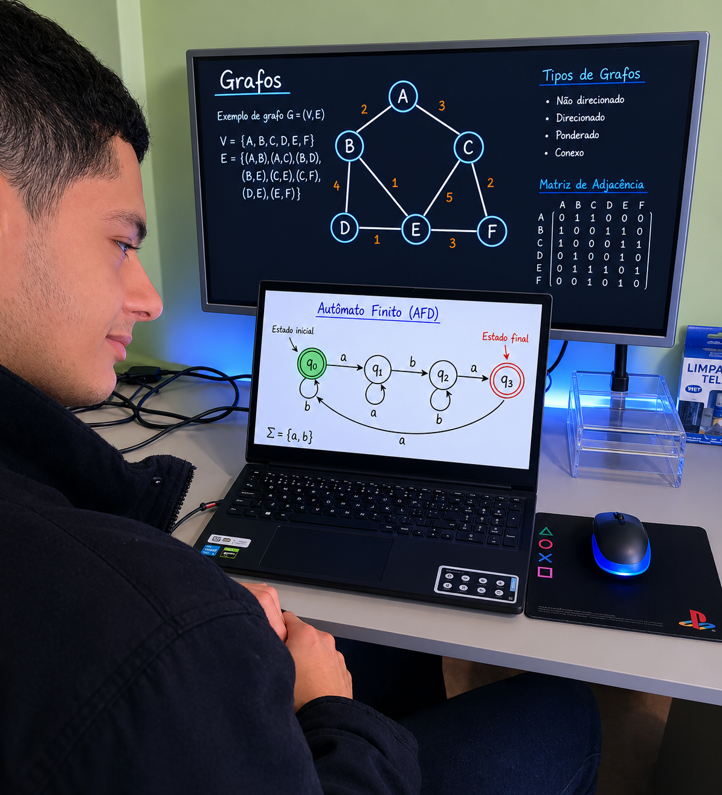
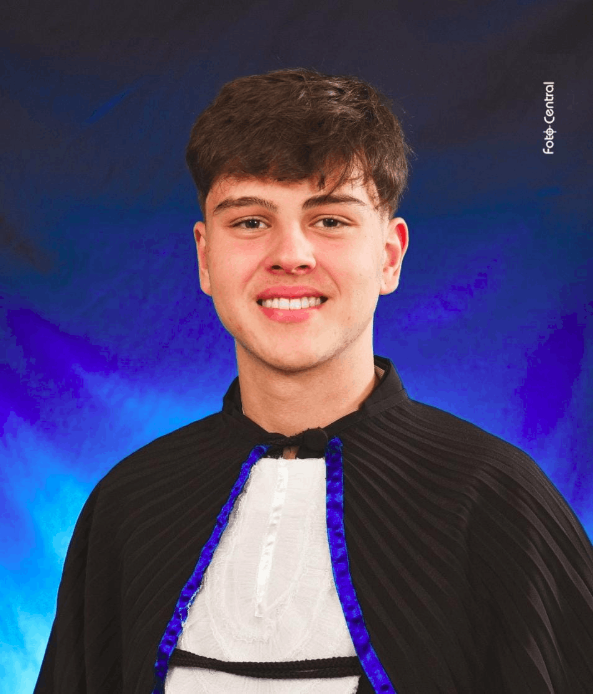

Meu nome é Gabriel Romão Soares, matrícula 215811 na UPF. Sou um estudante de Ciência da Computação que é interessado em Teoria da Computação.

Roberto Acker Constantino, matrírcula 215134 na UPF. Sou técnico em informática e estudante de ciencia da computação, tenho grande interesse no desenvolvimento de sites e redes de computadores.